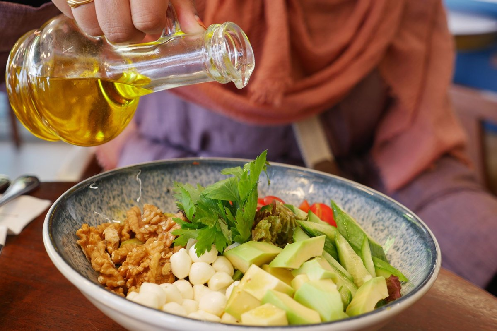
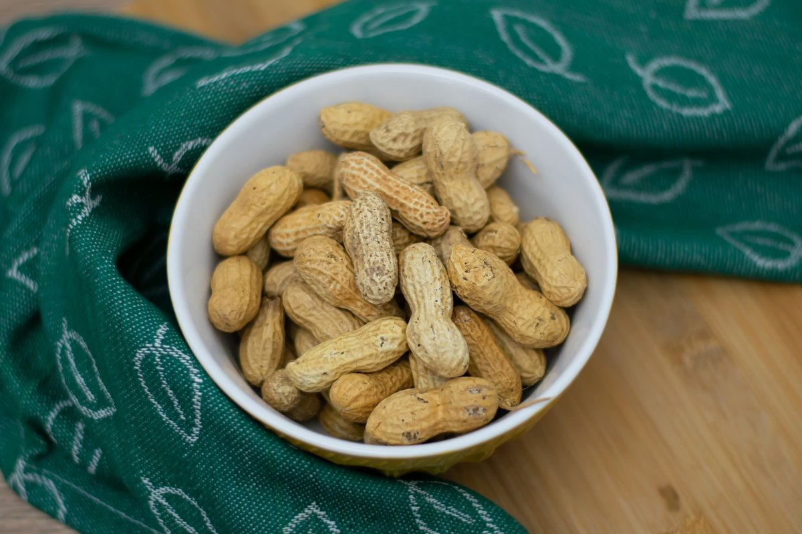
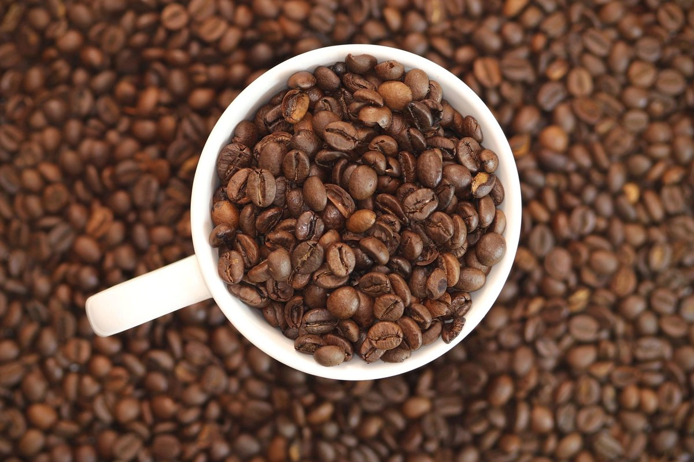

Even Moderate Drinking Linked To Cancer And Early Death, Major Study Finds: 5 Fixes

Key takeaways
- I used to think my evening glass of Pinot Noir was my innocent little nightcap.
- Then the headline hit: Even Moderate Drinking Linked To Cancer And Early Death, Major Study Finds, and my nightly routine suddenly felt like a ticking clock.
- Track what feels sustainable and adjust gradually.
I used to think my evening glass of Pinot Noir was my innocent little nightcap. Then the headline hit: Even Moderate Drinking Linked To Cancer And Early Death, Major Study Finds, and my nightly routine suddenly felt like a ticking clock.
It sent me down a deep rabbit hole of cellular inflammation and oxidative stress. I realized I didn't need absolute perfection, but I did need a serious upgrade to my daily recovery toolkit.
When the reality that Even Moderate Drinking Linked To Cancer And Early Death, Major Study Finds broke, I started focusing on aggressive cellular support. Here are 5 practical, science-backed ways I reclaimed my health and energy without losing my mind.
1. Upgrade Your Dietary Antioxidants
Alcohol depletes your body's master antioxidant, glutathione. To counteract that daily stress, you need high-potency bioflavonoids and polyphenols on your plate every single afternoon.
Swapping refined cooking fats for anti-inflammatory alternatives was my fastest win. I started heavily drizzling high-polyphenol fats over every meal to guard my gut barrier.
If you want an easy foundation for cellular repair, try using Extra Virgin Olive Oil generously over cold vegetables and grain bowls. Disclosure: This page may contain affiliate links.
2. Rehydrate with Targeted Electrolytes
Plain water isn't enough when your liver is actively processing metabolic byproducts. You need bioavailable minerals like potassium and magnesium to restore proper cellular hydration balance.
Check out this related healthy tip for balancing cellular hydration naturally.
The 2-Minute Win
Squeeze half a fresh lemon into 8 ounces of warm water with a pinch of Celtic sea salt right after waking up to kickstart liver phase-1 detoxification.
3. Support Your Liver's Phase-2 Pathways
Cruciferous vegetables like sulforaphane-rich broccoli sprouts help your liver package up toxins so they can leave your system safely. I eat a handful of raw sprouts daily.
Read our another practical guide to understand how cruciferous compounds neutralize oxidative stress.
4. Implement a Strict 3-Hour Fast Before Bed
Alcohol destroys sleep architecture, but so does digesting late-night snacks. Giving your body a clear 3-hour runway before sleep allows autophagy to clear damaged cellular components.
Review this stay consistent with this strategy to protect your deep sleep cycles tonight.
Prioritize cellular defense over rigid guilt; consistency with powerful anti-inflammatory foods beats short-term perfection every time.
5. Swap the Evening Routine with Bitter Herbs
Often, the urge for a drink is just a psychological trigger for unwinding. Switching to bitter digestive teas like dandelion root or gentian helps soothe your nervous system while supporting bile flow.
Feel free to explore more longevity guides to build an evening ritual that rebuilds your body.
Educational only — not medical advice.
Recommended Reading
- Not All Trans Fats Are Bad, Major Review Finds: Daily Energy
- Millions Take Calcium And Vitamin D For Bone Health. A Major Review Finds Little Benefit
- Can Extra Virgin Olive Oil Fight Cancer and Viruses? Experts Say Yes
More in longevity

longevityScientists Discover A Surprising Brain Benefit Of Eating Peanuts Every Day
Scientists discover a surprising brain benefit of eating peanuts every day. Boost your memory, lower stress, and improve
Read article →
longevitySix Popular Sugar Substitutes Linked To Faster Brain Aging: What to Know
Learn how six popular sugar substitutes linked to faster brain aging affect cognitive health and discover simple, real-f
Read article →